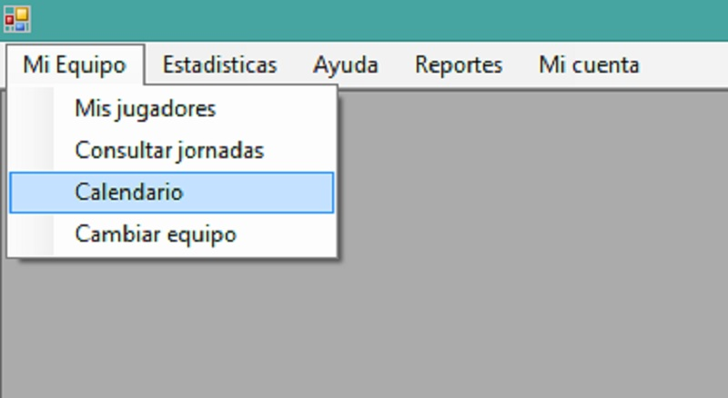

Al abrir la ventana principal del usuario (donde se muestran todas las ventanas), usted podrá observar la barra de menú en la parte superior de ésta:

Damos click en la pestaña "Mi equipo", a continuación click en la opción "Calendario":
A continuación Podremos ver El Calendario del equipo elegido anteriormente.

Por defecto el programa le mostrará el primer campeonato en el que se ingresó el equipo para participar, pero si su equipo está inscrito en más de un campeonato se le muestra una lista en el cual usted podrá seleccionar de que campeonato desea ver el calendario del equipo.

Nota:
Si no aparece ningun calendario en su equipo, es posible que no esté inscrito en ningún campeonato. Contacte al administrador de Campeonatos para más información.